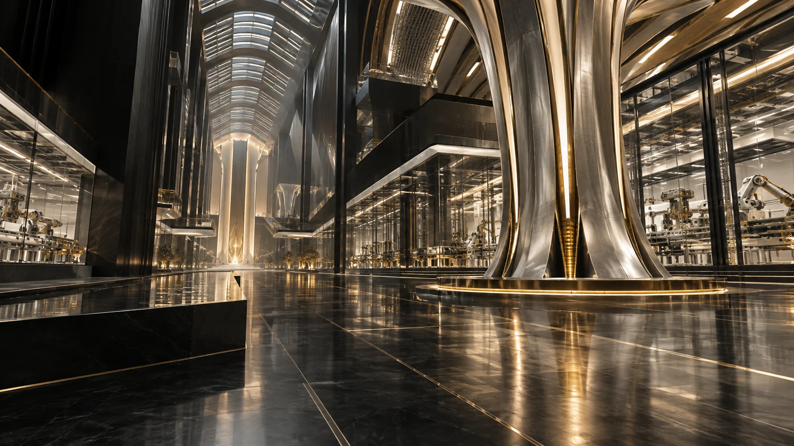

GHSCL HK
International operating/digital infrastructure and Command Center function.
AHTE connects institutions, manufacturers, laboratories, logistics, ports, financiers and destination actors without collapsing their legal or operational authority.
Target architecture · production connections require authorized activation
International operating/digital infrastructure and Command Center function.
Facility, product, formula, process and production evidence.
Physical/digital identity, serialization, aggregation, sample/custody and scientific evidence.
Warehouse/logistics execution and real-time evidence.
Sovereign inspection and release.
Import, receiving, distribution and market acceptance.
AHTE may provide authorised evidence packets and case-state integration; banks/financiers and Takaful operators retain their own decisions.